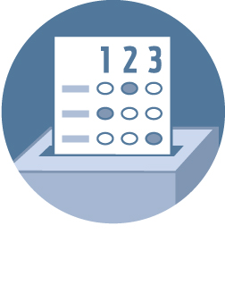

Polls close in
 Chronicle Live Chat
Chronicle Live Chat
 Voter Guide
Regional Measure 3 All Bay Area counties
Tolls on every bridge in the Bay Area except the Golden Gate would go up $3 over the next several years to pay for transportation improvements.